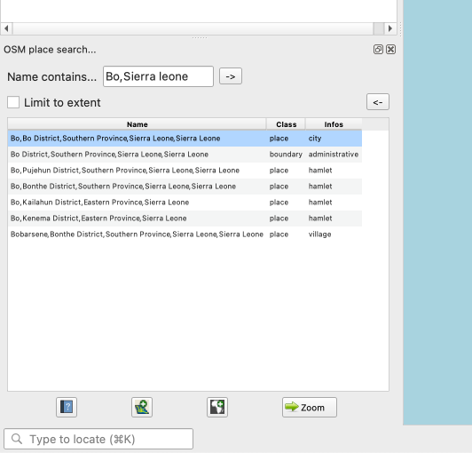
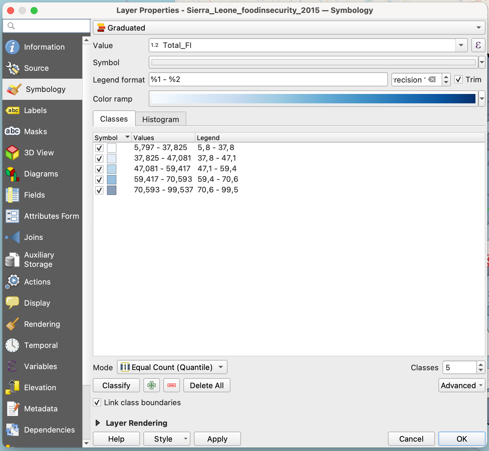
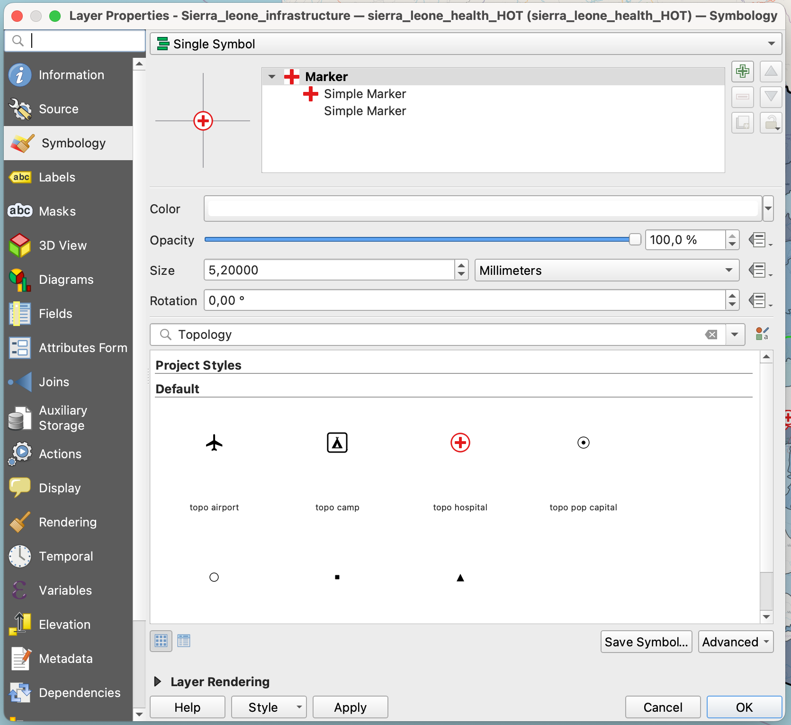
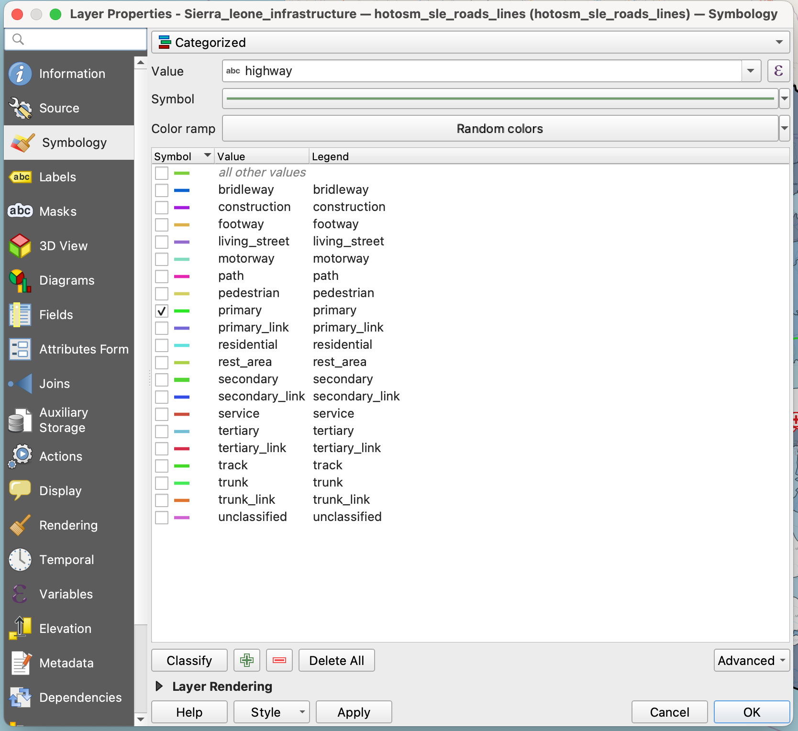
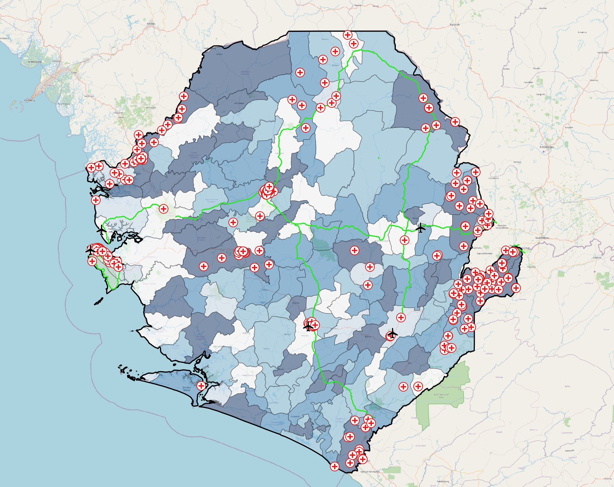
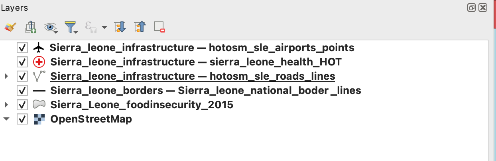

Geodata Classification Exercise 2: Map of food insecurity in Sierra Leone#
Characteristics of the exercise#
Aim of the exercise
This exercise aims to create an overview map of the distribution of food insecurity in Sierra Leone at district level. To do this, we will visualise both the distribution of food insecurity and key infrastructure elements such as hospitals, airports and roads.
Type of trainings exercise:
This exercise can be used in online and presence training.
It can be done as a follow-along exercise or individually as a self-study.
These skills are relevant for
QGIS Essentials
The skills tested in this exercise are necessary for all GIS-users.
Classifying geographic data
Estimated time demand for the exercise.
The exercise takes around 1 hour to complete, depending on the number of participants and trainers.
Instructions for the trainers#
Trainers Corner
Prepare the training
Take the time to familiarise yourself with the exercise and the provided material.
Prepare a white-board. It can be either a physical whiteboard, a flip-chart, or a digital whiteboard (e.g. Miro board) where the participants can add their findings and questions.
Before starting the exercise, make sure everybody has installed QGIS and has downloaded and unzipped the data folder.
Check out How to do trainings? for some general tips on training conduction
Conduct the training
Introduction:
Introduce the idea and aim of the exercise.
Provide the download link and make sure everybody has unzipped the folder before beginning the tasks.
Follow-along:
Show and explain each step yourself at least twice and slow enough so everybody can see what you are doing, and follow along in their own QGIS-project.
Make sure that everybody is following along and doing the steps themselves by periodically asking if anybody needs help or if everybody is still following.
Be open and patient to every question or problem that might come up. Your participants are essentially multitasking by paying attention to your instructions and orienting themselves in their own QGIS-project.
Wrap up:
Leave time for any issues or questions concerning the tasks at the end of the exercise.
Leave some time for open questions.
Available Data#
Download all datasets here and save the folder on your computer. Unzip the .zip file. The unzipped folder is structured according to the recommended folder structure for QGIS projects. Under “data > input” you will find the following files:
Sierra_leone_foodinsecurity_2015.shp(Polygon) ShapefileSierra_leone_borders.gpkg(MultiLineString) GeoPackageSierra_Leone_national_borders (Lines)
Sierra_Leone_provinces (Lines)
Sierra_leone_roads.gpd(Lines) GeoPackageSierra_leone_healthsites.gpkg(Points) Geopackagesl_airports.gpkg(Points) GeoPackage
Tasks#
Our goal is to produce an overview of the 2015 food insecurity situation in Sierra Leone together with the display of main infrastructure elements. To achieve this, we will visualise total food insecurity classifications alongside airports, hospitals, and primary roads in a map.
Open QGIS and create a new project by clicking on
Project->NewOnce the project is created save the project in the “project” folder of the “Ex_Sierra_Leone_foodinsecurity”. To do that click on
Project->Save asand navigate to the folder. Name the project “Sierra_Leone_foodinsecurity”.Import the GeoPackages
Sierra_leone_borders.gpkg,Sierra_leone_airports,Sierra_leone_healthsitesandSierra_leone_roads.gpkgas well as the shapefileSierra_leone_foodinsecurity_2015.shpinto your project via drag and drop (Wiki Video). Or by clickingLayer->Add Layer->Add Vector Layer: Click on the three dots and navigate to “Sierra_leone_borders.gpkg” in your file Browser. Select the file and click
and navigate to “Sierra_leone_borders.gpkg” in your file Browser. Select the file and click Open. Back in QGIS clickAdd(Wiki Video).
Attention
GeoPackages can contain multiple files and even whole QGIS projects. When you load such a file in QGIS a window will appear in which you have to select the files you want to load in your QGIS project.
First, let’s add a basemap to your map canvas using the plugin
QuickMapServicesby clicking on the symbol in you project toolbar. Search for “Bing Maps Satellite Imagery” in the QMS panel and add the base map layer via double click. For an optimised view adjust the opacity of your layers to optimise the use of the base map.Using the attribute table of the airports layer zoom to Tongo Airport by right-clicking on the row in the attribute table and selecting
Zoom to Feature(Wiki Video). Check the Basemap. Do you think the airstrip is still operational? The answer is no, according to Wikipedia. Delete Tongo Airport in the Attribute table. Delete Kabala airport too, since it is also not operational anymore.Now we want to check out the airports of the cities of Bo and Kenema. Are these airstrips in better shape? If yes, add them to the airport layer. To find these cities on your map interface use the QGIS Plugin
OSM Place Search. To add the pluginOSM Place Search, click onPlugins->Manage and Install Plugins…->Alland search for “OSM Place Search”. Once you have found it click on it and selectInstall Plugin. You can open theOSM Place Search Panellike every other panel by clicking onView->Panelsand checkingOSM Place Search Panel(Wiki Video).In the panel, you can search for places on the OpenStreetMap by typing the name in the search bar. Often it makes sense to add additional information like the name of the country. Try for example “Bo, Sierra Leone”.
{kind=link}

OSM place search.#
Add the airports of Bo and Kenema as points to the layer Sierra_Leone_airports. Find help on the addition of features to a point layer here.
Optional: In the attribute table, create a new column
Runway_lengthand add the length of the runways of Bo and Kenema by measuring them approximately with the measuring tool .Now we want to create a intuitive visualisation of the differences in food insecurity. To achieve this we use the “Graduated Classification” visualization option for the layer
Sierra_leone_foodinsecurity_2015by displaying the polygons according to classes created based on the “Total_FI” column in the attribute table.Right-click on the layer
Sierra_leone_foodinsecurity_2015.shpin theLayer Panel->Properties. A new window will open up with a vertical tab section on the left. Navigate to theSymbologytab.In the topmost dropdown menu choose
Graduated. UnderValueselect “Total_FI”.Further down the window click on
Classify. You now should see multiple classes based on the value range of the “TotalFI” column represented with different colours. You can adjust the colours by picking different colour palettes in the drop down menuColor ramp. Also, you can modify the value distribution of the classes by selecting different classification modes (Wiki) in theModedropdown menu.Play around with these options to achieve a colour scheme that suits the data. Once you are done, click
ApplyandOKto close the symbology window.
{kind=link}

Sierra Leone food insecurity classification.#
To give the hospitals and airports a more distinctive visualization, open the
Symbologytab again for the respective layers and choose “Topology” in the dropdown menu above the bottom panel top panel. Search for the airport/hospital symbol and select it by clicking on it. Again, apply your changes by clickingApplyandOK.
{kind=link}

Symbol for hospital.#
As a last visualisation step open the
SymbologytabSierra_Leone_roads (Lines)and like in step 9 open the top dropdown menu. Now instead ofGraduatedchoose Categorized Classification and select “highway” in theValuemenu. ClickClassifyto get a classification with individual colours for all unique values of the “highway” column. In the squares next to the classes, deselect all classes except for “primary”. You can change the colour of the classes by manually clicking and adjusting the colour in the drop “Symbol” dropdown menu near the top of the window.
{kind=link}

Categorized highways Sierra Leone.#
Set all the layers you loaded into your project to visible and arrange them in an order that is suitable for a good visualization of the food insecurity as well as the infrastructure elements. Choose a basemap that you think is suitable. Your final result could look like this:
{kind=link}

Example for the result of this exercise.#
The layer order here from top to bottom is:
Sierra_Leone_healthSierra_Leone_airportsSierra_Leone_roadsSierra_Leone_national_bordersSierra_leone_foodinsecurity_2015Basemap:
OpenStreetMap
{kind=link}

Layer order.#